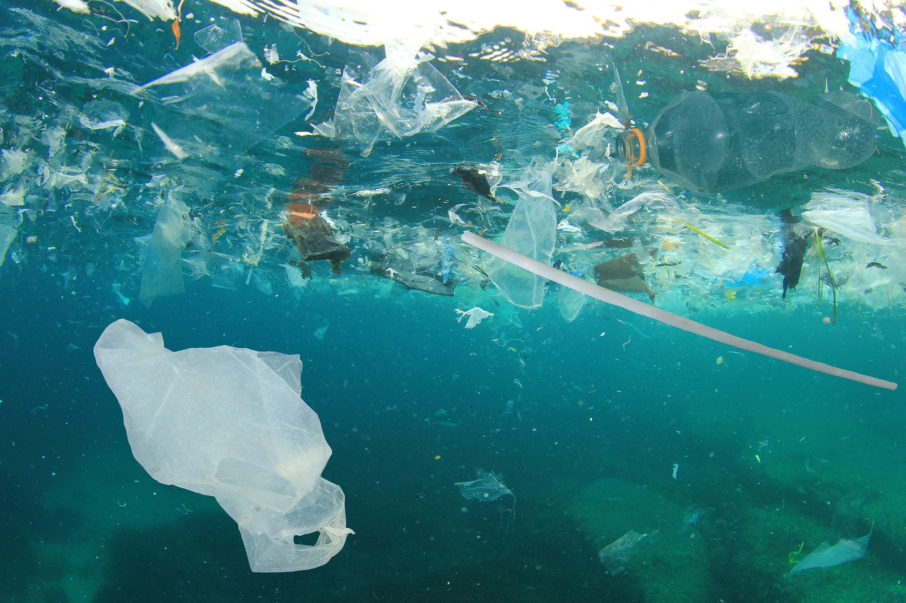
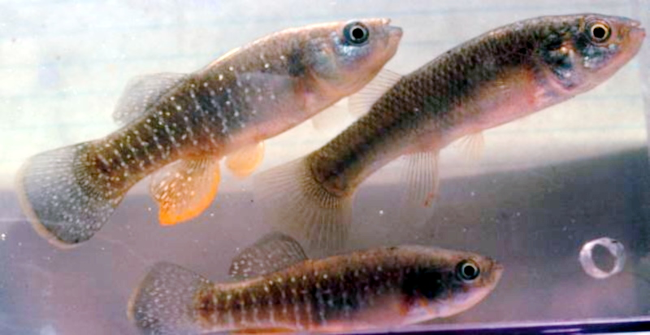
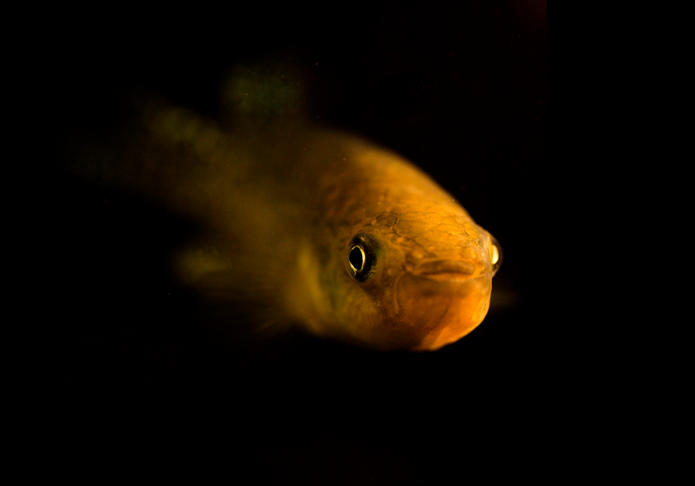

Water pollution occurs when harmful substances often chemicals or microorganisms contaminate a stream, river, lake, ocean, aquifer, or other body of water, degrading water quality and rendering it toxic to humans or the environment.
This widespread problem of water pollution is jeopardizing our health. Unsafe water kills more people each year than war and all other forms of violence combined. Meanwhile, our drinkable water sources are finite: Less than 1 percent of the earth’s freshwater is actually accessible to us. Without action, the challenges will only increase by 2050, when global demand for freshwater is expected to be one third greater than it is now(NRDC,2023)

Killifish populations have adapted to survive and reproduce in polluted waters. Researchers have studied the evolutionary and genetic basis for this adaptation, discovering that it comes with a cost.
For more than two decades, the Duke University Superfund Research Program (SRP) Center and collaborators at Boston University have used these 2- to 3- inch-long fish to understand the toxicity, mechanisms, and health effects of two groups of hazardous contaminants, polycyclic aromatic hydrocarbons (PAHs) and polychlorinated biphenyls (PCBs).

Evolution and Cost of Adaptation
-Discovered that killifish resistance to pollutants is at least partly genetic.
-Analyzed how adapting to contaminants leaves killifish more susceptible to other stressors.
While leading the Duke team, Di Giulio compared fish from the polluted Elizabeth River with fish from unpolluted rivers and monitored their offspring for two generations in the lab. During this time, Di Giulio’s team continued to expose the fish to contaminated sediments from the Elizabeth River. Offspring of Elizabeth River fish were more likely to survive and less likely to have heart deformities, tail deformities, and other morphological issues resulting from PAH exposure than offspring of fish from a clean estuary in Virginia.
(Killifish Provide Clues For Human Toxicant Susceptibility,n.d).